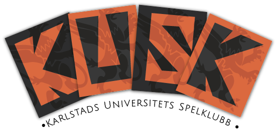
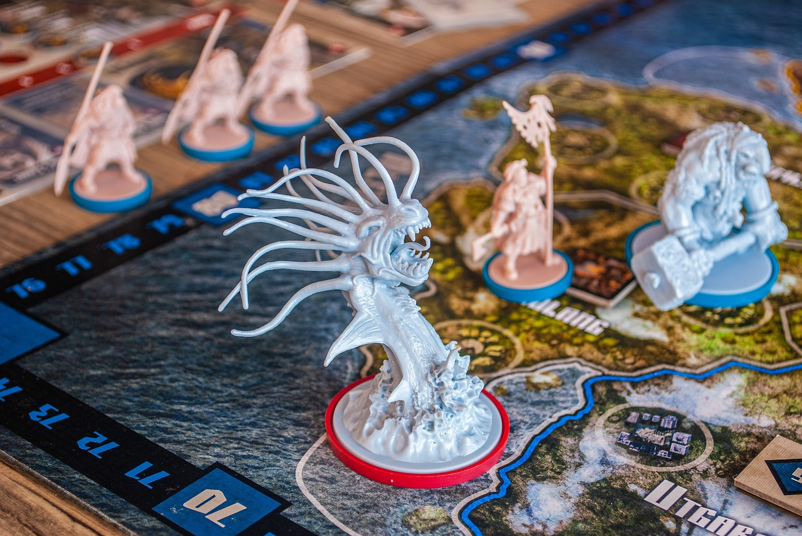

Vi träffas varje måndagskväll
klockan 19
Hus 12B sal 257
Karlstad Universitet
Det är bara att komma förbi när du känner för det, med eller utan vänner.
Inga förkunskaper krävs, bara ett gott humör!
